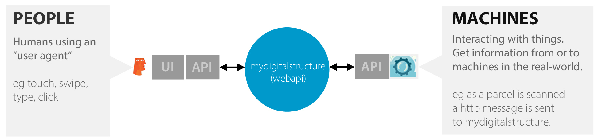

| |
COMMUNITY
INTERNET OF THINGS
The most common way for data (information) to be added, updated, deleted to, or retrieved from, a mydigitalstructure space is via people using an user-agent (eg web browser), which takes the human actions (touch, click, type) and coverts it the mydigitalstructure language - which is then sent as a http based request.
Machines (things) that hold data about the real-world can also work as a "silent" agent, sending data to a mydigitalstructure space or requesting data that triggers a machine action. |
|  |
| EXAMPLES |
| Order processing |
When an order is dispatched, an order status update data message is sent to mydigitalstructure |
| Activity |
When a contractor walks past a sensor at a building site, they can be automatically "clocked on" |
| Machine automation and tracking |
When a water tank level gets to low, a message is sent to mydigitalstructure. A pump then retrieves the information and starts pumping or an order is placed and a tanker is dispatched to fill the tank. |
|
| RESOURCES |
|
|
|
|
|